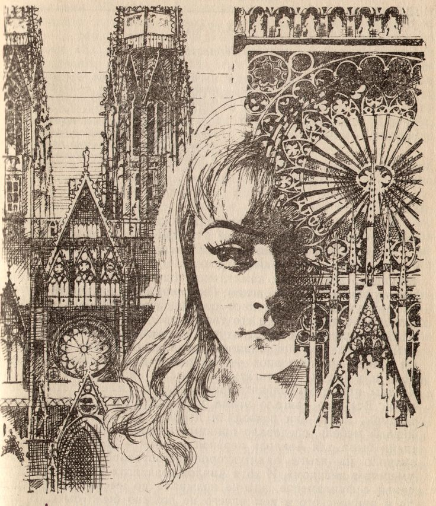

the webmistress' dwelling

my name is
Miyan Ivoselle ♡
Hello, I'm a lady from the East Coast who enjoys writing. I love to talk, so feel free to E-Mail me if you'd like to chat.
I study History alongside Women, Gender, and Sexuality at a public college in Cambridge, Massachusetts.
last read

Mrs. S (K Patrick)
I picked this up in nyc with my bestest of friends. Picture me, holding Das Kapital warmly in my hands, getting a good glimpse of the staff picks... "English boarding school psychosexual lesbian intrigue with comphet!". Easiest buy of my life. This book is remarkable, honestly. i reveled in it, this odd, floating school (ohtori..?). A mercurial sort of anger bubbling beneath the guise of a fervid obsession. an utter hatred of the manosphere existence so subtle that if you don't understand this component of lesbian life you'll blink and miss it. her desire to degrade mrs. s., to knock her from the pedestal of heterosexuality. it's so compellingly incorrigible with its syntax i can't put it down. so fucked and so stunning. this book was written for me.... honestly...!